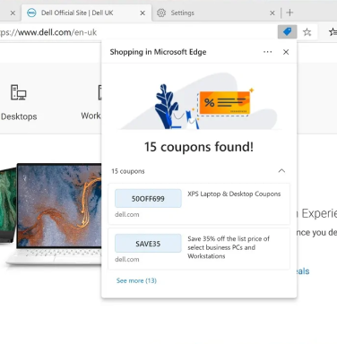

Shopping flyout
Edge shopping
Edge has a built in feature to share multiple ways with online shoppers to help save money.
Working with the design team, I contributed the coupon, cashback and shopping-recommendation components. The components are then consumed and implemented by our developing partners.